ÆtherGenesis is a 2-player head-to-head deckbuilding game in which you take on the role of an ambitious mage, a newcomer to the Circle of Magi, studying the mysteries of Æther – the essence of all magic – and competing with rival magi.
The content on this page is copyrighted by Kristopher K. Willmert, 2023-2026. All rights reserved.
You and your opponent each start with a deck of 10 spell cards – 5 Meditate, 2 Ætherweave, 2 Ætherbolt, and 1 Ætherblast.
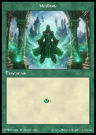
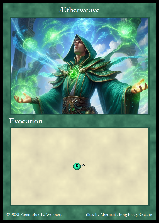
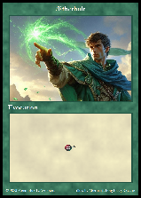
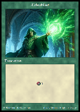
Set aside all Condition cards face-up, one stack of each identical card, for use during play.
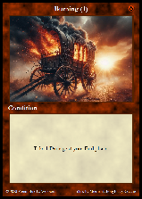
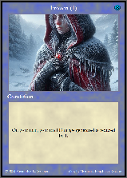
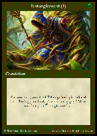
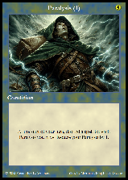
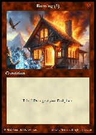
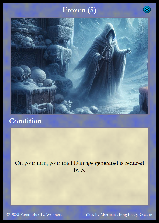
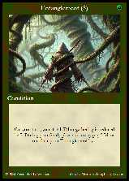
Set aside the Æther Channel cards in their own face-up stack
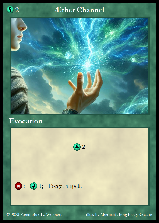
All other cards are shuffled together and placed face-down in a single deck called the Æther deck.
Before play begins, draw 5 cards from the Æther deck and place them in a row face-up next to the stack of Æther Channel cards. This area of face-up Æther Channel cards and cards drawn from the Æther deck is called the Knowledge Pool, and these are the cards you and your opponent may add to your decks during play. If one of the first 5 cards is an Event card, set it aside and replace it with another card, and then shuffle it back into the Æther deck. When this setup is complete, the center of the play area should look something like this:
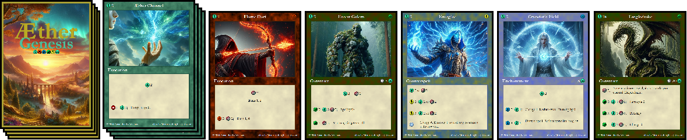
You and your opponent each shuffle your starting deck and draw a starting hand of 5 spells.
Select which player takes the first turn at random. The player to play first must skip their Study phase on their first turn.
You and your opponent each start the game with 80 units of Mana , which represents your magical energy used both as a shield against your opponent's attacks and for delving into the Æther to gain more magical knowledge. When a you are damaged by your opponent, your Mana is reduced by the amount of damage dealt. You lose the game when your are dealt enough damage to reduce your Mana to below 0 – in other words, when you have taken damage without the protection of your Mana. The last player standing wins the game!
Gameplay is turn-based, and each player's turn is composed of four phases:
Note: The player to take the first turn at the start of the game skips their Study phase that first turn.
In your Study phase you may choose to Ætherdelve – that is, spend Mana to draw 5 spells from the Æther deck and place them in the Knowledge Pool in an additional row, making them available to you to acquire in your Spellcraft phase. Any spells you add to the Knowledge Pool by Ætherdelving that you don't acquire during your turn are placed on the bottom of the Æther deck in a random order during your End phase.
You may Ætherdelve as many times as they wish in your Study phase, but the cost of Ætherdelving increases significantly each time:
In this phase you may do three things:
Most spell cards produce a certain amount of Æther and/or Damage when you cast them. When a spell produces Æther, this is referred to as gathering Æther, and when a spell produces Damage, this is referred to as generating Damage.
Æther gathered is the resource you may use at any time during your Spellcraft phase to either memorize or charge (more on those in their self-titled sections below). Damage generated is the resource you use to damage your opponent (i.e. reduce their Mana total); Damage is tallied up in your Spellcraft phase, but is not actually dealt (i.e. "resolved") until your Resolution phase. Spell cards may have other effects as well, and these are described by the card's rule text. Rule text will often contain keywords for the sake of brevity (the meaning behind each keyword can be found in the Gameplay Mechanics section of the manual under the Keywords and Terms subsection).
You may cast a spell from your hand at any time during your Spellcraft phase, but you must play all spells in your hand before moving on to your Resolution phase. Your play area in which you place the spell cards you cast is called your Field.
More important details about the types of spells and their effects can be found in both the Spell Types and Gameplay Mechanics sections of the manual.
Memorization is the act of spending Æther to acquire spells from the Knowledge Pool. You may only use your Æther for memorization during your Spellcraft phase. The amount of Æther you must spend to memorize a spell from the Knowledge Pool is displayed at the top left corner of the card.
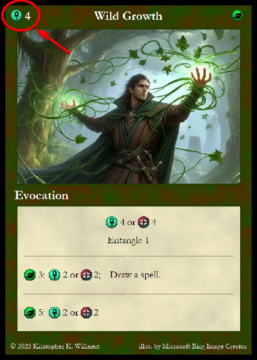
When you memorize a spell, you add it directly to your discard pile. If the spell you memorize came from the Æther deck (in other words, if it is not an Æther Channel spell), and you did not add it to the Knowledge Pool via Ætherdelving, then after you memorize it, you immediately fill the place it occupied in the Knowledge Pool with another spell drawn from the top of the Æther deck.
You may also spend Æther to increase your Mana at a 1:1 cost – that is, 1 unit of Æther may be spent to increase your Mana by 1 unit. Any time a player increases their Mana total this is referred to as charging. You may only use your Æther for charging during your Spellcraft phase.
At the beginning of your Resolution phase, your opponent has an opportunity to cast any Counterspell cards they have in their hand if they wish. Exactly how this works is explained in detail in the Spell Types section of the manual. Your opponent must say that they are finished casting any Counterspells they wish (or that they do not wish to cast any) before you may continue with your Resolution phase.
Once your opponent is finished casting Counterspells, you assign the Damage that was generated by your spells and effects during your Spellcraft phase to your opponent and/or to any of their persistent spells. Some types of persistent spell must be destroyed before Damage can be assigned to the player that controls them, while others may be ignored and their controlling player damaged directly while they remain in play. Damage assigned to persistent spells must be "all or nothing" – that is, enough Damage must be assigned to them to destroy them, otherwise Damage may not be assigned to them at all. This is explained in more detail in the Spell Types section.
In this phase you end your turn by removing any of the instance spells you played from your Field and discarding them, and then drawing 5 spells from your deck to be played on your next turn. If you have fewer than 5 cards remaining in your deck, you must draw however many cards do remain, shuffle your discard pile and place it face down to serve as your deck going forward, and then draw from it until you have 5 spells in hand.
If you chose to Ætherdelve this turn, you must shuffle together face-down any Ætherdelved spells that still remain in the Knowledge Pool and place them on the bottom of the Æther deck.
Throughout the game, whenever memorization or an effect causes a spell to be removed from the Knowledge Pool and replaced with a card from the Æther deck, there is a chance that the card drawn will be an Event card. Event cards have special effects that affect both players and take place immediately when the card is drawn. Unless the rule text of the Event states otherwise, its effects take place only once, and then it is placed in the Void and another card is drawn from the Æther deck to fill the vacant spot in the Knowledge Pool. (The Void is explained under the Gameplay Mechanics section of the manual.)
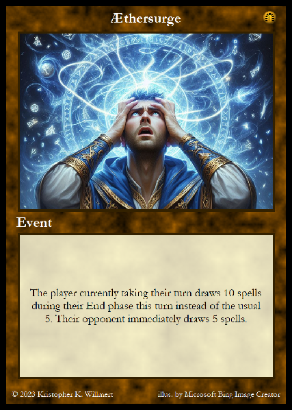
Control and ownership are two important core concepts of the game. These are explained in more detail in the Gameplay Mechanics section under the Keywords and Terms subsection of the manual, but generally speaking, the player who is the controller of a spell is the player currently benefiting from its effects, and the player who is the owner of a spell is the player that originally memorized it from the Knowledge Pool (unless an effect explicitly assigns the spell to a new owner). When the rule text on a spell refers to "you", it is referring to the spell's current controller.
There are four types of spell cards that fall under two categories:
Most spell cards have an effect that always occurs when you cast the spell described in the first section of the spell's rule text area; this is called the base effect. Some spells also have additional sections describing synergy effects that the spell can have in addition to its base effect when there is more than one spell from the same school of magic in your Field. Schools and synergy effects are explained in detail in the Gameplay Mechanics section of the manual under the Schools and Synergies subsection. Other spells have a section with a forget effect, explained further in the Gameplay Mechanics section of the manual under the subsection The Void.
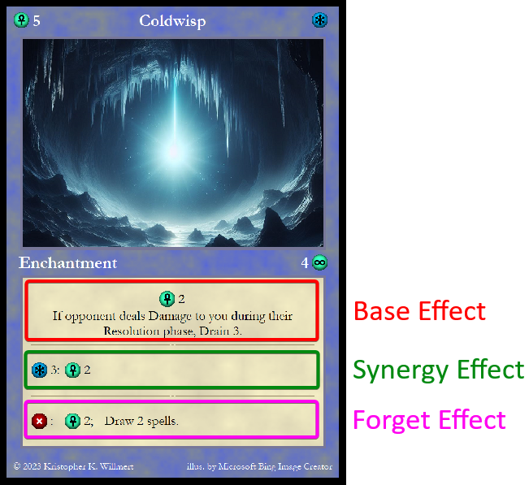
Instance spells produce their effects in the turn they are cast and then are discarded during the End phase. When you cast an instance spell, you must use the base effect immediately, but any synergy effects that become available to you can be used any time during your Spellcraft phase (see the Schools and Synergy Effects subsection under the Gameplay Mechanics section of the manual for more details).
Evocations and Counterspells are both instance spells.
You may cast Evocation spells during your Spellcraft phase for a one-time effect. When you cast an Evocation, it is placed in your Field, and is considered to be in your Field, or "in play", until it is discarded during your End phase.
Evocations always have a base effect, and may have a forget effect and/or one or more synergy effects.
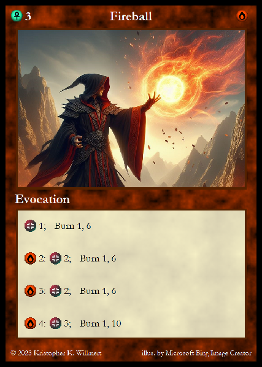
Counterspells may be used in two possible ways. You may cast them during your Spellcraft phase for their base effect and synergy effects, in which case they work exactly like Evocations. However, you may alternatively cast them at the beginning of your opponent's Resolution phase for their counter effect. The rule text for the counter effect appears in its own section of the card with the counter symbol on the left side.
A Counterspell's counter effect is always instead of the base effect, never in addition to it. When you cast a Counterspell during your opponent's turn, it goes into your Field just as it would if you had cast it on your own turn, and it is discarded during your opponent's End phase. When played for their counter effect, Counterspells do not count towards any synergies and their synergy effects may not be used.
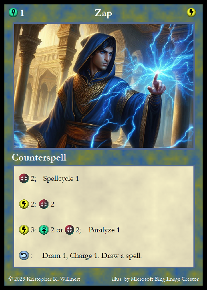
Persistent spells are cast during your Spellcraft phase just like Evocations, but instead of being discarded in your End phase, they stay in your Field after you cast them until Damage or another effect removes them. As long as a persistent spell remains in your Field, its effects are repeated on each of your Spellcraft phases. Unlike instance spells, you can choose when to use any of the available effects on the spell during your Spellcraft phase. However, when multiple effects are grouped together under the same section of the rule text (such as the base effect section, or a synergy section), you must use all of those effects together at the same time, and you must use all effects available to you on all spells before the end of your Spellcraft phase unless the effect's rule text states otherwise.
Enchantments and Constructs are both persistent spells.
Enchantments work as described above, and during your opponent's Resolution phase, they may choose to allocate some of their Damage to destroying one or more Enchantments in your Field. Enchantments have their own Mana value that indicates how much Damage must be allocated to them to destroy them displayed on the right side of the card between the picture and the rules text. Partial Damage may not be allocated to Enchantments to destroy them across multiple turns; they must be destroyed all at once or not damaged at all. In other words, their Mana value cannot be partially depleted or restored in the same way as a player's Mana. When one of your Enchantments is destroyed it immediately goes into your discard pile.
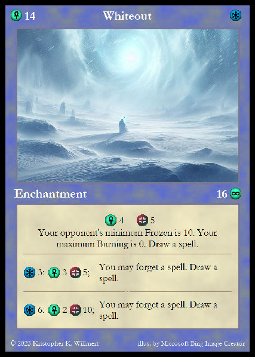
Constructs function in almost the same way as Enchantments. The only difference is that they must be destroyed by your opponent before they can assign Damage to you. For example, if you control a single Construct with 9 Mana, your opponent must have generated at least 9 Damage to be able to use it to destroy your Construct, and if they are have only generated 8 Damage or less, they cannot assign Damage to your Construct or you at all that turn. However, your Constructs do not protect your Enchantments – your Enchantments may be targeted by your opponent's Damage regardless of whether or not you also control a Construct.
Constructs have a shield symbol next to their Mana value as an extra reminder that they must be destroyed before their controller can be assigned Damage.
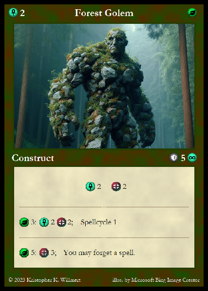
Every spell you can memorize from the Æther deck is a member of a school of magic. A spell's school is indicated by the icon in the top right corner of the card, as well as the coloration of the border surrounding the image and rule text. There are four base schools of magic in the ÆtherGenesis core game:
Some spell cards have synergy effects (a.k.a. synergies) that trigger when additional spells from the same school are in your Field in the same turn. A spell's synergies are indicated by a clearly separated section of the rule text with a school icon and a number located on the left side of the synergy section, and the description of the effect located to the right of it. The number indicates the total number of spells from the school indicated by the accompanying icon that you must have in your Field to trigger the synergy effect.
For example, if you cast a Fire spell that has a synergy section displaying the icon for the Fire school with a "3" next to it, that means you must have a total of three Fire spells in your Field in the same turn (i.e. two more Fire spells in addition to the spell with the synergy) in order for the synergy effect to be triggered.
The synergy effects on all types of spells in your Field may be used at any time during your Spellcraft phase once they are triggered, but when multiple effects are grouped together under a single synergy, you must use all of those effects together at the same time, and you must use all triggered effects before the end of your Spellcraft phase unless the rule text states otherwise. For example, when rule text says "you may do this", it is optional, but when it just says "do this", it is required.
Note that spells you cast later in your Spellcraft phase do count towards triggering the synergies on spells already in your Field.
The Void is an area of the board where spells that are "forgotten" or "voided" by players are placed face-up.
When a spell says that you may forget a spell (or force your opponent to forget a spell), this means to permanently remove the spell from the affected player's deck and place it in The Void. Sometimes you can do this using an effect from another spell, and sometimes spells have a forget effect that you may choose to trigger at the cost of forgetting the spell with the effect. If a spell has a forget effect, the effect will be in its own divided section of the rule text indicated by the forget symbol on the left side. To use a spell's forget effect, it must be in your Field; you cannot use forget effects on spells in your hand until you first cast them. However, when any other type of effect simply says that you may forget a spell and does not explain further, this always means that the spell may only be removed from your hand or discard pile. If the spell is instead to be forgotten from another location, the rule text must explicitly state this.
When you void a spell, you still place it in The Void, however the term applies to effects that allow you to remove a spell from the Knowledge Pool rather than from your deck. When you void a spell from the Knowledge Pool, you immediately replace it with another spell from the Æther deck, just like when you memorize a spell. However, there is one very important difference from memorization – when you void a spell from an additional row you temporarily added to the Knowledge Pool during your Study phase via Ætherdelving, you still immediately replace it with another spell from the Æther deck.
Note that void effects only apply to spells in the Knowledge Pool that were drawn from the Æther deck – they may not be used on the stack of Æther Channel spells. Further, if a player forgets an Æther Channel spell, it is placed back in the stack in the Knowledge Pool rather than in the Void.
Some spells can be used to inflict conditions on your opponent. Conditions are tracked via the Condition type cards set aside at the start of the game. The effects of each condition are explained in the Keywords section below. The four conditions are:
When you are afflicted with a condition, you use the condition cards to keep track of the condition's effects and severity. For example, if you are inflicted with 3 points of Burning, you must keep three copies of the Burning (1) card in your Field to track this. If you are later inflicted with 2 more Burning for a total of 5, you may swap out your Burning (1) cards for a single Burning (5) card so that you can track your Burning with fewer cards.
The Burning and Frozen conditions persist until they are removed by a spell or effect. Paralysis fades on its own each turn, and Entanglement can be reduced at the cost of Mana – the details of how this works are described in the respective condition card rule texts.
There are several different effects that spells in ÆtherGenesis can produce. Some are fully explained directly in the spell's rule text, but some effects have their own terms or keywords to make the rule text more concise.
This keyword appears in spell rule text as Burn n, m – where n is a number that indicates how much Burning is added by the spell, and m is a number that indicates the maximum amount of Burning that the spell can inflict. For example, if you cast a spell with Burn 1, 2 and your opponent already has 1 Burning, your opponent's Burning is increased to 2. However if you cast an additional spell with Burn 1, 2 there is no further increase to your opponent's Burning because the second number indicates that the spell my not increase your opponent's Burning above 2.
In ÆtherGenesis, the term cast refers to the act of playing a spell card.
This keyword may appear in rule text as Charge n, where n is an amount by which the player that controls the effect increases their Mana. Rule text may also refer to "charging" as a shorthand way of describing the act of a player increasing their Mana. When you expend Æther to increase your Mana, this is a form of charging, but the word applies to any other means by which a player may increase their Mana as well.
When rule text refers to the player that controls a spell, it means the player for whom the spell is in effect. In other words, if you have a spell card in your Field, you are the player that has control of that spell. Some effects may allow you to take control of a spell originally cast by your opponent, in which case you would place the spell in your Field. Whenever rule text on a spell refers to "you", it is referring to the player that currently controls the spell. A change in who controls a spell does not mean a change in who owns the spell spell unless the effect that causes the change explicitly states that it does. (See the Ownership keyword below.)
This keyword usually appears in rule text as Drain n, where n is an amount of Mana that the affected player loses. Unlike normal Damage, a player may not be defeated as a direct result of drain effects – drain may reduce your Mana to a minimum of 0, but once you are at 0 Mana it has no further effect on you. Also unlike normal Damage, drain reduces your Mana by the indicated amount immediately when the effect occurs rather than being delayed until the Resolution phase. Unless otherwise noted in the rule text, Drain n effects always apply to the opponent of the player who controls the spell producing the drain effect.
An effect is anything that a spell causes to happen in the game. Æther gathered and Damage generated from a spell are effects, and things that happen as described by the spell's rule text are also effects. Most spells have an effect that always occurs when you cast the spell described in the first section of the card's rules text; this is called the base effect and does not have any special symbols to indicate it. Some spells also have additional sections describing synergy effects that the spell can have, which are indicated by the school symbol and number on the left side of the section. Still other spells have a section with a forget effect indicated by the forget symbol on their left side.
This keyword appears in rule text as Entangle n, where n is the amount of Entanglement added to the affected player. Your Entanglement may not be increased above 5.
The player's play area in which they place the spell cards they cast or control is called their Field. Each player has their own Field.
This keyword appears in rule text as Freeze n, m, and it works in exactly the same way as the Burn keyword (as described above) except that it inflicts the Frozen condition instead of Burning.
Forget and Void are two effect keywords that refer to slightly different actions, both of which result in a card or cards being placed in The Void. The specifics of this are described under the Gameplay Mechanics section in the subsection titled The Void.
This keyword refers to when a player gains Æther from a spell or effect.
Essentially, a spell's owner is the player to whose discard pile the spell goes when it is no longer in play. By default spell cards are always owned by the player that originally memorized them from the Knowledge Pool, or for the starting spells, in whose deck they began the game. However, an effect may explicitly change the owner of a spell to a different player.
This keyword appears in rule text as Paralyze n, where n is the amount of Paralysis added to the affected player. Your Paralysis may not be increased above 3.
When a spell has the Piercing keyword in its rule text, this means that any Damage generated by that spell may be assigned directly to your opponent regardless of whether or not they have any Constructs in their Field. If the Piercing keyword appears in synergy rule text, it only applies to the spell when that synergy is in effect, but it still applies to all Damage generated by that spell card.
When rule text states that you can or must reset, this means to shuffle your discard pile and deck together and then replace your deck with the shuffled cards. Most commonly this keyword will appear by itself simply as "Reset"; when this is the case it is not optional and it applies to the player that controls the spell. If the player does not have any cards in their discard pile, they must still shuffle their deck.
Nearly every card in ÆtherGenesis is considered to be a spell (the only exceptions being Condition and Event cards), and the phrase "cast a spell" is synonymous with "play a card".
This keyword appears in rule text as Spellcycle n where n is a number, and it means that you may choose to discard up to n spells from your hand and then draw the same number of spells from your deck as you just discarded. Unless the rule text explicitly states otherwise, Spellcycling effects are not mandatory, and you may always choose to Spellcycle fewer spells than the number listed with the Spellcycle keyword.